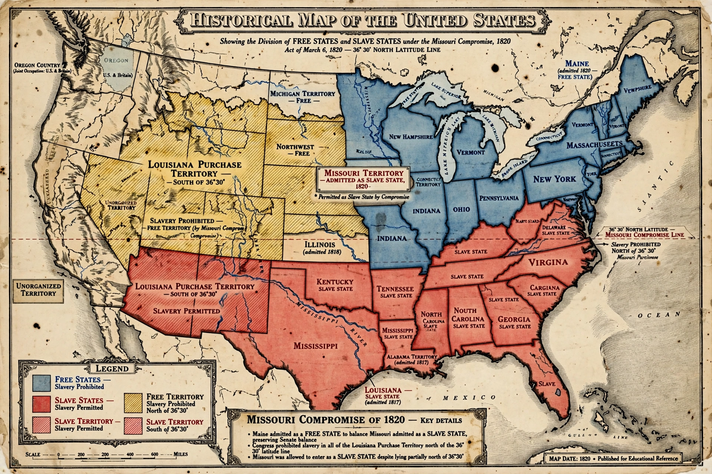

The Missouri Compromise was a series of United States federal statutes passed in 1820–1821 that preserved the balance between slave and free states in the Senate: Missouri entered the Union as a slave state and Maine as a free state, while slavery was prohibited in the remaining Louisiana Purchase lands north of latitude 36°30′. Brokered largely by Henry Clay, it defused a sectional crisis over slavery's expansion for three decades.

| Enacted | 1820–1821 |
|---|---|
| Key figures | Henry Clay, James Tallmadge Jr., Rufus King |
| Repealed by | Kansas–Nebraska Act (1854); ruled unconstitutional in Dred Scott (1857) |
When Missouri applied for statehood in 1819, New York congressman James Tallmadge proposed gradually emancipating its enslaved people; the amendment passed the House but failed in the evenly divided Senate, provoking furious debate and Thomas Jefferson's famous fear of a "fire bell in the night" over slavery.
The compromise admitted Maine (formerly part of Massachusetts) as a free state and Missouri as a slave state, keeping an 12–12 balance, and drew the 36°30′ line through the Louisiana Territory. A second compromise in 1821 resolved a dispute over Missouri's constitution excluding free Black citizens.
The Kansas–Nebraska Act of 1854 repealed the line in favour of popular sovereignty, igniting "Bleeding Kansas" and the founding of the Republican Party; the Supreme Court in Dred Scott v. Sandford (1857) declared the compromise unconstitutional. Historians view 1820 as the moment slavery's territorial expansion became the dominant national question leading to the Civil War. See Compromise of 1850.